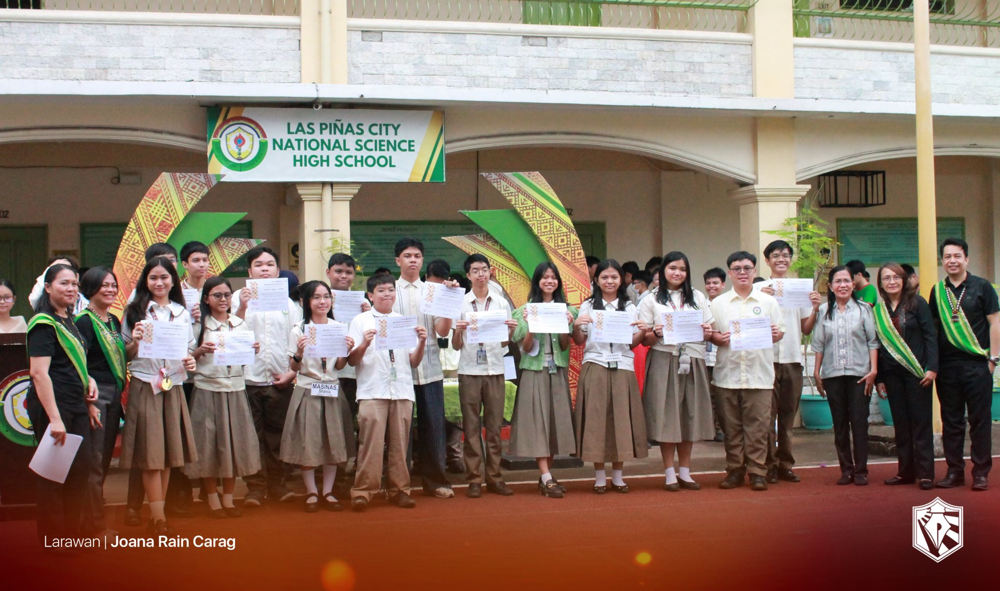
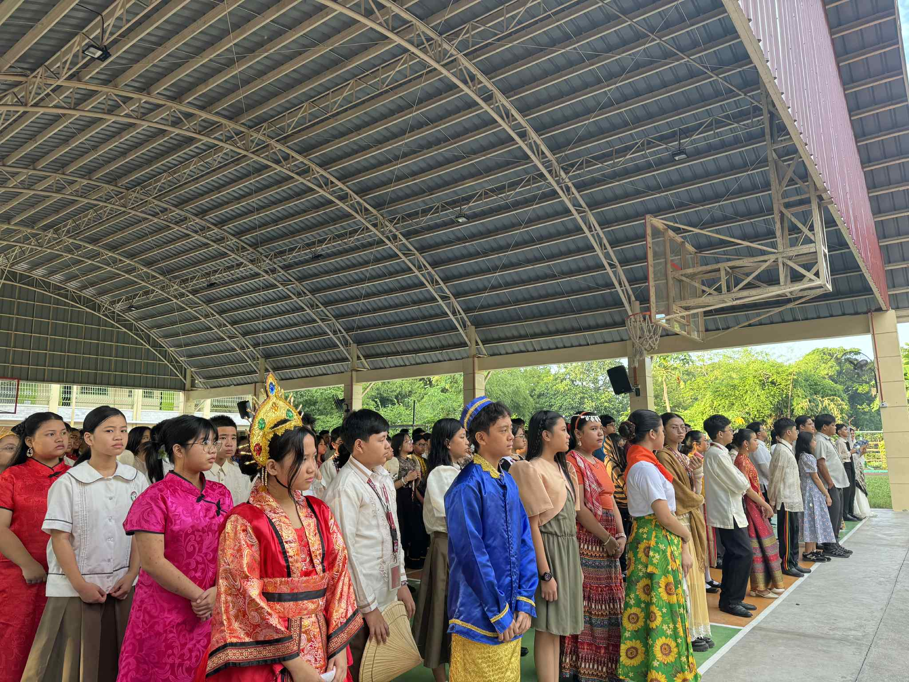
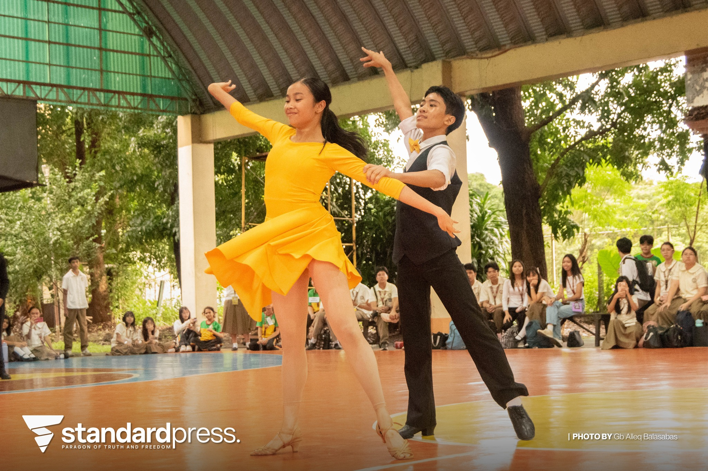
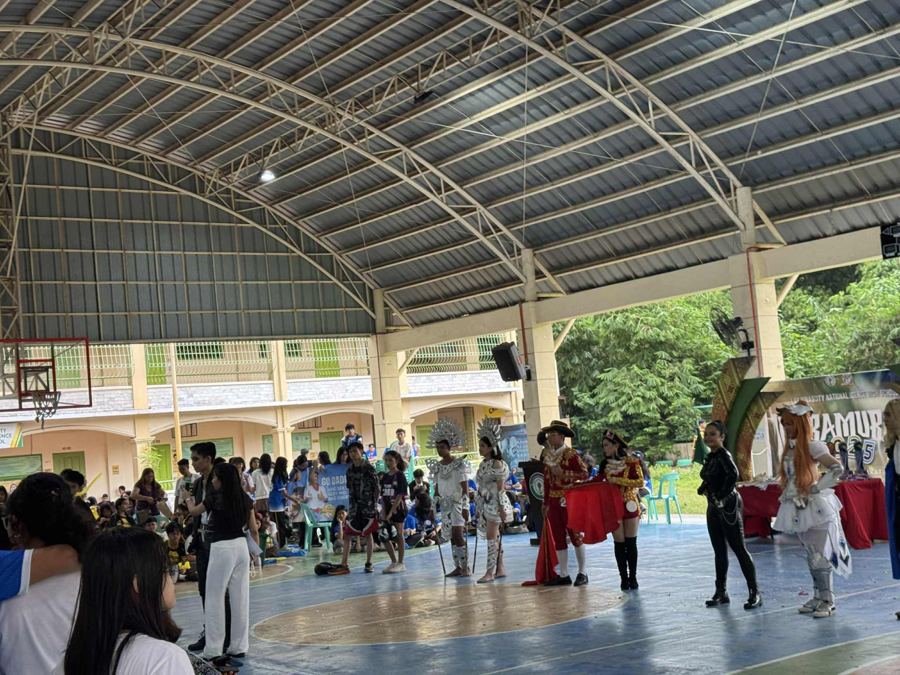
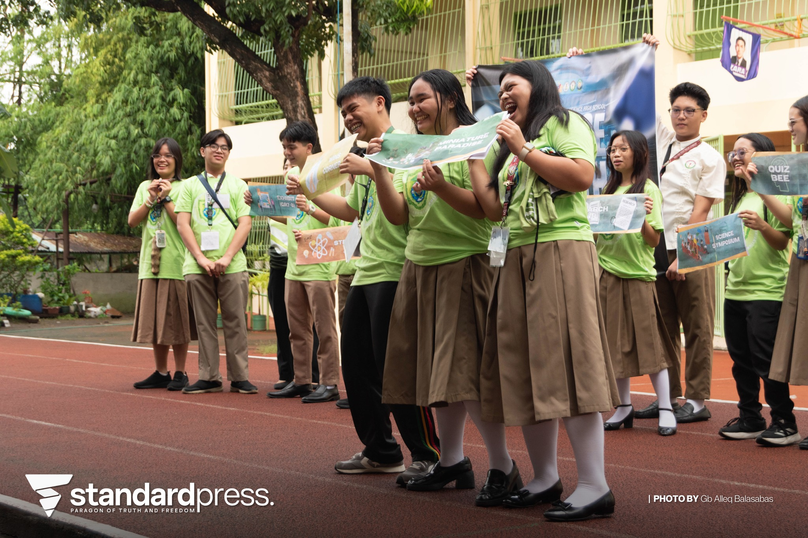
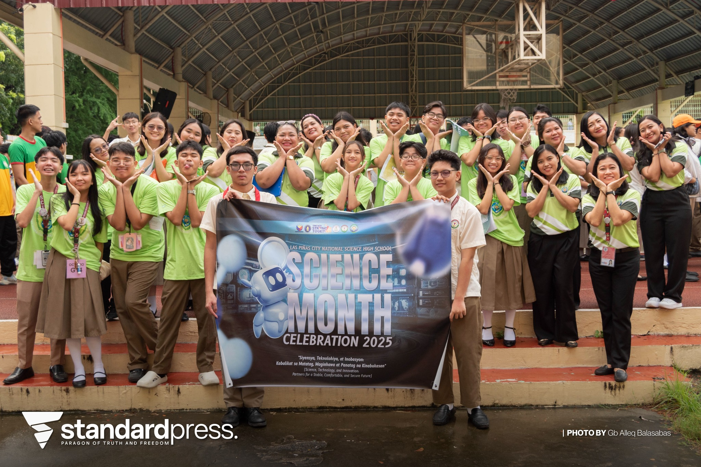
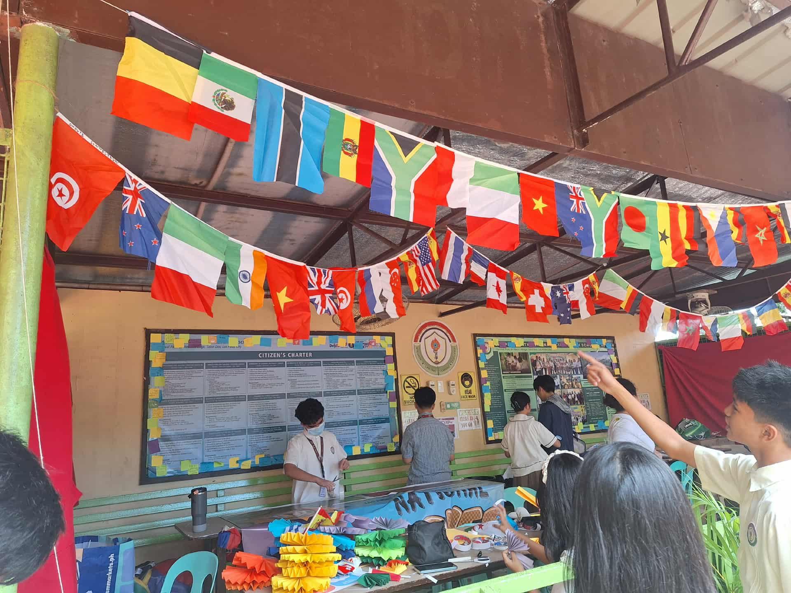
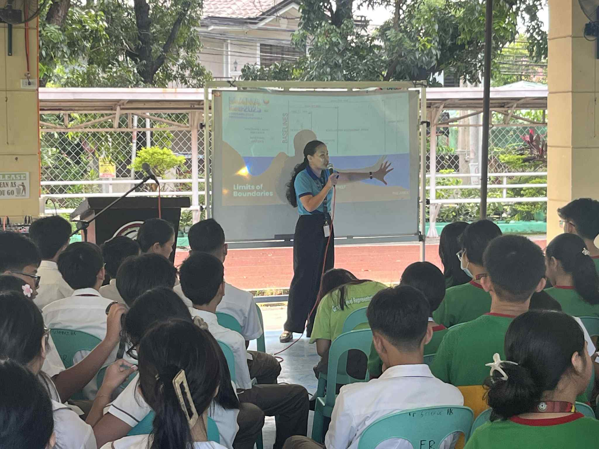
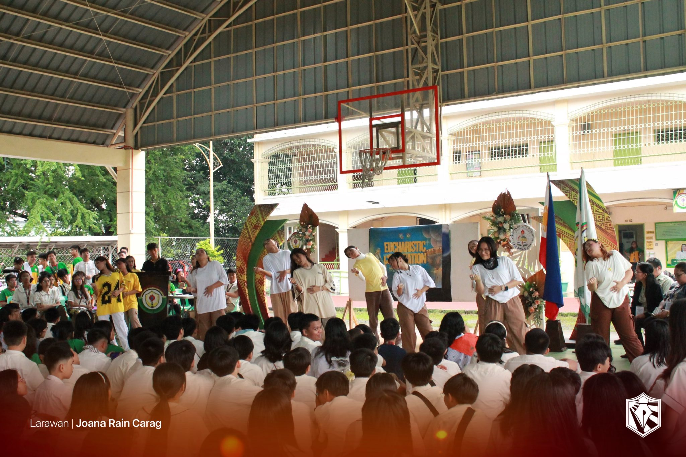
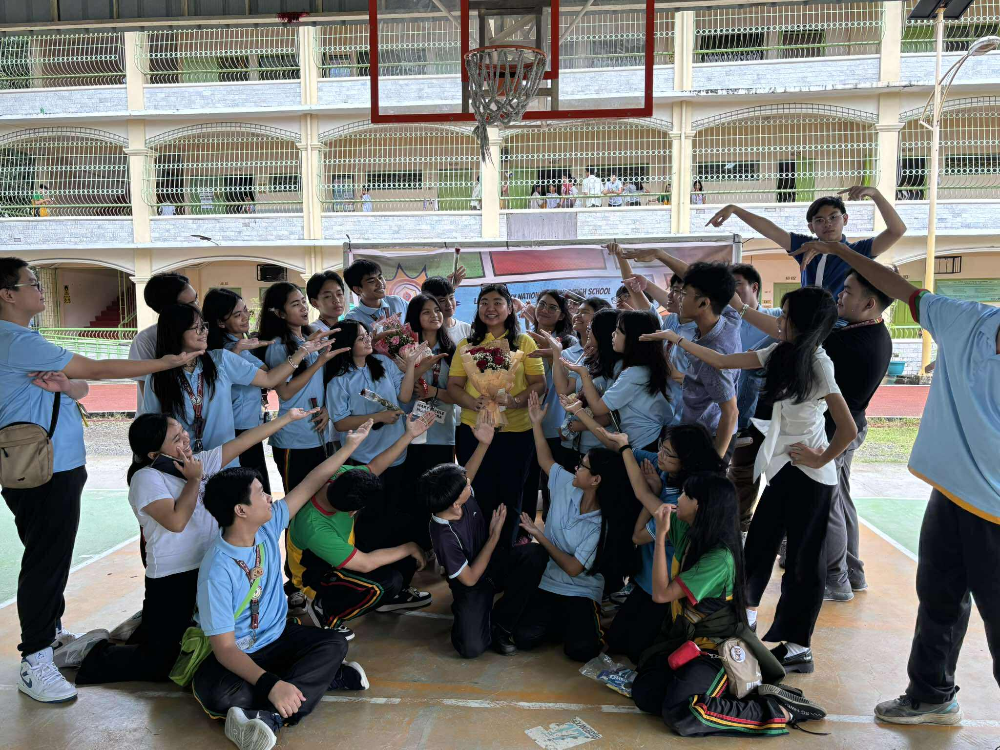

The most important thing I learned during Buwan ng Wika is the importance of loving and respecting our languange and culture. I can apply it in real life by using our languange properly without saying hateful words to others, and respecting our own traditions. I joined by performing a deklamation infront of the class, and by wearing traditional costumes every monday for the whole month. If I were to teach, I'd share stories, poems, songs and movies that show how beautiful our culture. This event made me realize and reminds me to stay connected to our roots and love our identity as Filipinos.
 The most important thing that I picked up from Intramurals is teamwork, sportsmanship and communication. It taught me how to handle both winning and losing with respect, and how teamwork can make any challenge easier as long as you know how to properly communicate with your team. I joined in cheering for our team for all the games, and even played MLBB myself. If I were able to teach this, I'd remind everyone that sports isn't just about winnning but about building friendships and discipline. Events like this are important because they help students become active, united and motivated, inside and out of the classroom.
 From Science Month, I learned how science is not just about facts, but about solving real problems and making a difference. I can apply this by using critical thinking and creativity to solve issues in my community. I learned this from joining the quiz bee, and creating a research proposal about flood control from aghamazing. I actively participated in these events as well as helping with our WINS Corner and participating for the poster making contest. If I were to teach, I would show how science connects to real life situations through projects, experiments and simple examples where everyone relates to. It is important because they make learning more fun and practical, helping students discover their strengths and apply what they learn beyond the classroom.
 The most important thing from AP month is knowing the importance of know our history and learning from it. I can apply it by being a more responsible citizen and appreciating all the sacrifices and efforts of those who built our nation. I didn't actively join the activities for AP Month, but I supported my classmates and learned from the seminar about the West Philippine Sea. If I were to teach this topic, I would share everything I learned and how iut helped students understand our history and why it's important to value our roots. It's important because it gives meaning to each subject and helps students see its connection to real life.
 From teachers day, the most important thing I learned was how important it is to show gratitude to our dearest teachers for all their hard work and patience. I can apply it by showing respect and appreciation and kindness towards my teachers everyday. I helped in organizing and preparing for our Teacher's Day party and asissted in maintaining order during the soft opening as part of my club duties. If I were to teach this topics, I'd tell how our class prepared surprises, performances and messages to make our teachers feel special. I'd explain how the event showed our gratitude and reminded everyone that teachers are our guide to success. I'ts important because it strengthens our respect and appreciation for both teachers and the learning process itself.
 